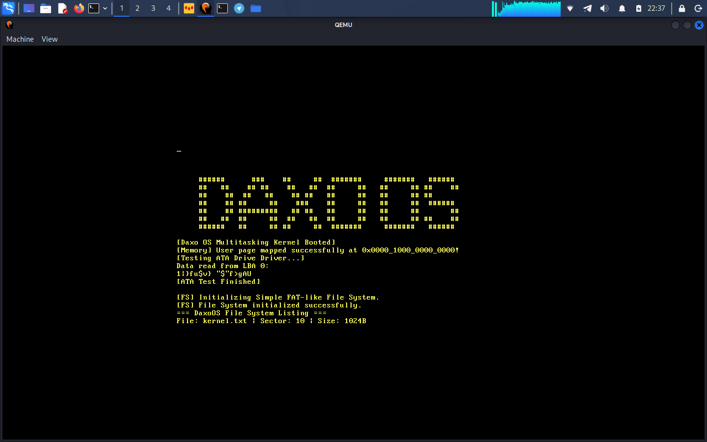

Bootloader
Initial Real Mode / Protected Mode Switch
Day 1 — First text output buffer verification.

Memory
4-Level Paging Tables Setup
Day 14 — Setting up virtual memory isolation.

User Space
Transition to Ring 3
Day 45 — Running user tasks separated from kernel space.